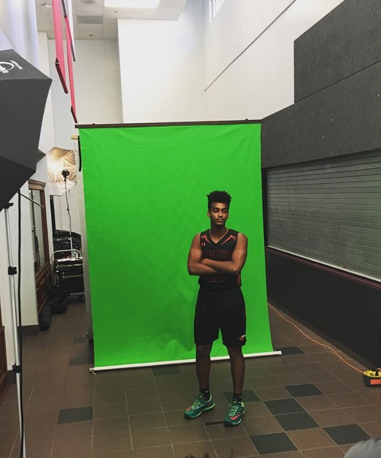

Hello! My name is Emanuel Tesfa and I am Computer Science student with aspirations to attain a Masters degree and embark in a career in Machine Learning or Cloud Computing A dream job of mine would be to work in North Charlotte at Red Hat.
My family and I are originally from Eritrea, which is a small country on the East Coast of Africa. Since then, I've lived in Charleston, South Carolina and Jacksonville, Florida during my time in America.
I am a man of many hobbies! Soccer was my first sport and played it most of my life. In middle school and high school I also played basketball and even had the opportunity to play at a Division 2 school. That being said, my favorite hobby and activity is playing saxophone.
I got accepted to major in jazz performance in a few schools and even a final audition at NYU! To this day, I still play semi-professionally in a group for money. I also play clarinet as well as flute for classical band. Now I've came to find things, such as project based computing, is something that I've came to enjoy. Just the idea of learning and building new things has became something that has propelled me in my major.
I have attended:
Certifications:
My educational goals include: